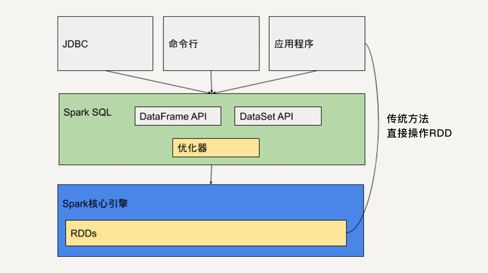

- 00 开篇词 从这里开始，带你走上硅谷一线系统架构师之路.md.html
- 01 为什么MapReduce会被硅谷一线公司淘汰？.md.html
- 02 MapReduce后谁主沉浮：怎样设计下一代数据处理技术？.md.html
- 03 大规模数据处理初体验：怎样实现大型电商热销榜？.md.html
- 04 分布式系统（上）：学会用服务等级协议SLA来评估你的系统.md.html
- 05 分布式系统（下）：架构师不得不知的三大指标.md.html
- 06 如何区分批处理还是流处理？.md.html
- 07 Workflow设计模式：让你在大规模数据世界中君临天下.md.html
- 08 发布_订阅模式：流处理架构中的瑞士军刀.md.html
- 09 CAP定理：三选二，架构师必须学会的取舍.md.html
- 10 Lambda架构：Twitter亿级实时数据分析架构背后的倚天剑.md.html
- 11 Kappa架构：利用Kafka锻造的屠龙刀.md.html
- 12 我们为什么需要Spark？.md.html
- 13 弹性分布式数据集：Spark大厦的地基（上）.md.html
- 14 弹性分布式数据集：Spark大厦的地基（下）.md.html
- 15 Spark SQL：Spark数据查询的利器.md.html
- 16 Spark Streaming：Spark的实时流计算API.md.html
- 17 Structured Streaming：如何用DataFrame API进行实时数据分析_.md.html
- 18 Word Count：从零开始运行你的第一个Spark应用.md.html
- 19 综合案例实战：处理加州房屋信息，构建线性回归模型.md.html
- 20 流处理案例实战：分析纽约市出租车载客信息.md.html
- 21 深入对比Spark与Flink：帮你系统设计两开花.md.html
- 22 Apache Beam的前世今生.md.html
- 23 站在Google的肩膀上学习Beam编程模型.md.html
- 24 PCollection：为什么Beam要如此抽象封装数据？.md.html
- 25 Transform：Beam数据转换操作的抽象方法.md.html
- 26 Pipeline：Beam如何抽象多步骤的数据流水线？.md.html
- 27 Pipeline I_O_ Beam数据中转的设计模式.md.html
- 28 如何设计创建好一个Beam Pipeline？.md.html
- 29 如何测试Beam Pipeline？.md.html
- 30 Apache Beam实战冲刺：Beam如何run everywhere_.md.html
- 31 WordCount Beam Pipeline实战.md.html
- 32 Beam Window：打通流处理的任督二脉.md.html
- 33 横看成岭侧成峰：再战Streaming WordCount.md.html
- 34 Amazon热销榜Beam Pipeline实战.md.html
- 35 Facebook游戏实时流处理Beam Pipeline实战（上）.md.html
- 36 Facebook游戏实时流处理Beam Pipeline实战（下）.md.html
- 37 5G时代，如何处理超大规模物联网数据.md.html
- 38 大规模数据处理在深度学习中如何应用？.md.html
- 39 从SQL到Streaming SQL：突破静态数据查询的次元.md.html
- 40 大规模数据处理未来之路.md.html
- FAQ第一期 学习大规模数据处理需要什么基础？.md.html
- FAQ第三期 Apache Beam基础答疑.md.html
- FAQ第二期 Spark案例实战答疑.md.html
- 加油站 Practice makes perfect！.md.html
- 结束语 世间所有的相遇，都是久别重逢.md.html
- 捐赠
15 Spark SQL：Spark数据查询的利器
你好，我是蔡元楠。
上一讲中，我介绍了弹性分布式数据集的特性和它支持的各种数据操作。
不过在实际的开发过程中，我们并不是总需要在RDD的层次进行编程。
就好比编程刚发明的年代，工程师只能用汇编语言，到后来才慢慢发展出高级语言，如Basic、C、Java等。使用高级语言大大提升了开发者的效率。
同样的，Spark生态系统也提供很多库，让我们在不同的场景中使用。
今天，让我们来一起探讨Spark最常用的数据查询模块——Spark SQL。
Spark SQL 发展历史
几年前，Hadoop/MapReduce在企业生产中的大量使用，HDFS上积累了大量数据。
由于MapReduce对于开发者而言使用难度较大，大部分开发人员最熟悉的还是传统的关系型数据库。
为了方便大多数开发人员使用Hadoop，Hive应运而生。
Hive提供类似SQL的编程接口，HQL语句经过语法解析、逻辑计划、物理计划转化成MapReduce程序执行，使得开发人员很容易对HDFS上存储的数据进行查询和分析。
在Spark刚问世的时候，Spark团队也开发了一个Shark来支持用SQL语言来查询Spark的数据。
Shark的本质就是Hive，它修改了Hive的内存管理模块，大幅优化了运行速度，是Hive的10倍到100倍之多。
但是，Shark对于Hive的依赖严重影响了Spark的发展。Spark想要定义的是一个统一的技术栈和完整的生态，不可能允许有这样的外在依赖。
试想，如果Spark想发布新的功能还需要等Hive的更新，那么势必会很难执行。此外，依赖于Hive还制约了Spark各个组件的相互集成，Shark也无法利用Spark的特性进行深度优化。
所以，2014年7月1日，Spark团队就将Shark交给Hive进行管理，转而开发了SparkSQL。
SparkSQL摒弃了Shark的（将SQL语句转化为Spark RDD的）执行引擎，换成自己团队重新开发的执行引擎。
Spark SQL不仅将关系型数据库的处理模式和Spark的函数式编程相结合，还兼容多种数据格式，包括Hive、RDD、JSON文件、CSV文件等。
可以说，Spark SQL的问世大大加快了Spark生态的发展。
Spark SQL的架构
Spark SQL本质上是一个库。它运行在Spark的核心执行引擎之上。

如上图所示，它提供类似于SQL的操作接口，允许数据仓库应用程序直接获取数据，允许使用者通过命令行操作来交互地查询数据，还提供两个API：DataFrame API和DataSet API。
Java、Python和Scala的应用程序可以通过这两个API来读取和写入RDD。
此外，正如我们在上一讲介绍的，应用程序还可以直接操作RDD。
使用Spark SQL会让开发者觉得好像是在操作一个关系型数据库一样，而不是在操作RDD。这是它优于原生的RDD API的地方。
与基本的Spark RDD API不同，Spark SQL提供的接口为Spark提供了关于数据结构和正在执行的计算的更多信息。
在内部，Spark SQL使用这些额外的信息来执行额外的优化。虽然Spark SQL支持多种交互方式，但是在计算结果时均使用相同的执行引擎。
这种统一意味着开发人员可以轻松地在不同的API之间来回切换，基于这些API提供了表达给定转换的最自然的方式。
接下来让我们进一步了解DataSet和DataFrame。
DataSet
DataSet，顾名思义，就是数据集的意思，它是Spark 1.6新引入的接口。
同弹性分布式数据集类似，DataSet也是不可变分布式的数据单元，它既有与RDD类似的各种转换和动作函数定义，而且还享受Spark SQL优化过的执行引擎，使得数据搜索效率更高。
DataSet支持的转换和动作也和RDD类似，比如map、filter、select、count、show及把数据写入文件系统中。
同样地，DataSet上的转换操作也不会被立刻执行，只是先生成新的DataSet，只有当遇到动作操作，才会把之前的转换操作一并执行，生成结果。
所以，DataSet的内部结构包含了逻辑计划，即生成该数据集所需要的运算。
当动作操作执行时，Spark SQL的查询优化器会优化这个逻辑计划，并生成一个可以分布式执行的、包含分区信息的物理计划。
那么，DataSet和RDD的区别是什么呢？
通过之前的叙述，我们知道DataSet API是Spark SQL的一个组件。那么，你应该能很容易地联想到，DataSet也具有关系型数据库中表的特性。
是的，DataSet所描述的数据都被组织到有名字的列中，就像关系型数据库中的表一样。
如上图所示，左侧的RDD虽然以People为类型参数，但Spark框架本身不了解People类的内部结构。所有的操作都以People为单位执行。
而右侧的DataSet却提供了详细的结构信息与每列的数据类型。
这让Spark SQL可以清楚地知道该数据集中包含哪些列，每列的名称和类型各是什么。也就是说，DataSet提供数据表的schema信息。这样的结构使得DataSet API的执行效率更高。
试想，如果我们要查询People的年龄信息，Spark SQL执行的时候可以依靠查询优化器仅仅把需要的那一列取出来，其他列的信息根本就不需要去读取了。所以，有了这些信息以后在编译的时候能够做更多的优化。
其次，由于DataSet存储了每列的数据类型。所以，在程序编译时可以执行类型检测。
DataFrame
DataFrame可以被看作是一种特殊的DataSet。它也是关系型数据库中表一样的结构化存储机制，也是分布式不可变的数据结构。
但是，它的每一列并不存储类型信息，所以在编译时并不能发现类型错误。DataFrame每一行的类型固定为Row，他可以被当作DataSet[Row]来处理，我们必须要通过解析才能获取各列的值。
所以，对于DataSet我们可以用类似people.name来访问一个人的名字，而对于DataFrame我们一定要用类似people.get As [String] (“name”)来访问。
RDD、DataFrame、DataSet对比
学习Spark到现在，我们已经接触了三种基本的数据结构：RDD、DataFrame和DataSet。接下来你的表格中，你可以看到它们的异同点，思考一下怎样在实际工程中选择。
发展历史
从发展历史上来看，RDD API在第一代Spark中就存在，是整个Spark框架的基石。
接下来，为了方便熟悉关系型数据库和SQL的开发人员使用，在RDD的基础上，Spark创建了DataFrame API。依靠它，我们可以方便地对数据的列进行操作。
DataSet最早被加入Spark SQL是在Spark 1.6，它在DataFrame的基础上添加了对数据的每一列的类型的限制。
在Spark 2.0中，DataFrame和DataSet被统一。DataFrame作为DataSet[Row]存在。在弱类型的语言，如Python中，DataFrame API依然存在，但是在Java中，DataFrame API已经不复存在了。
不变性与分区
由于DataSet和DataFrame都是基于RDD的，所以它们都拥有RDD的基本特性，在此不做赘述。而且我们可以通过简单的 API在 DataFrame或 Dataset与RDD之间进行无缝切换。
性能
DataFrame和DataSet的性能要比RDD更好。
Spark程序运行时，Spark SQL中的查询优化器会对语句进行分析，并生成优化过的RDD在底层执行。
举个例子，如果我们想先对一堆数据进行GroupBy再进行Filter操作，这无疑是低效的，因为我们并不需要对所有数据都GroupBy。
如果用RDD API实现这一语句，在执行时它只会机械地按顺序执行。而如果用DataFrame/DataSet API，Spark SQL的Catalyst优化器会将Filter操作和GroupBy操作调换顺序，从而提高执行效率。
下图反映了这一优化过程。
错误检测
RDD和DataSet都是类型安全的，而DataFrame并不是类型安全的。这是因为它不存储每一列的信息如名字和类型。
使用DataFrame API时，我们可以选择一个并不存在的列，这个错误只有在代码被执行时才会抛出。如果使用DataSet API，在编译时就会检测到这个错误。
小结
DataFrame和DataSet是Spark SQL提供的基于RDD的结构化数据抽象。
它既有RDD不可变、分区、存储依赖关系等特性，又拥有类似于关系型数据库的结构化信息。
所以，基于DataFrame和DataSet API开发出的程序会被自动优化，使得开发人员不需要操作底层的RDD API来进行手动优化，大大提升开发效率。
但是RDD API对于非结构化的数据处理有独特的优势，比如文本流数据，而且更方便我们做底层的操作。所以在开发中，我们还是需要根据实际情况来选择使用哪种API。
思考题
什么场景适合使用DataFrame API，什么场景适合使用DataSet API？
欢迎你把答案写在留言区，与我和其他同学一起讨论。
如果你觉得有所收获，也欢迎把文章分享给你的朋友。
© 2019 - 2023 Liangliang Lee. Powered by gin and hexo-theme-book.